גרסה סופית
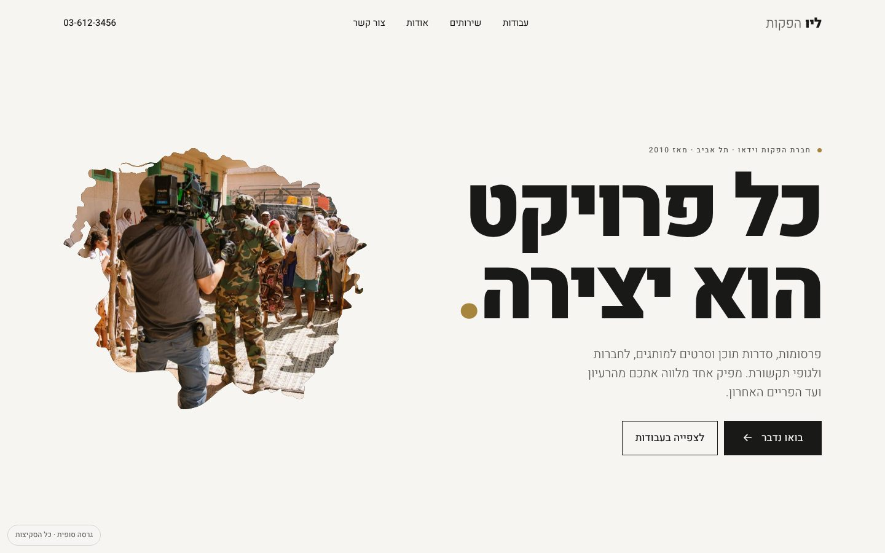
נייר, עם סרטים בראש
הבסיס הניטרלי של סקיצה 8, עם פריימים שמתחלפים בתוך הצללית. סדר התוכן והניסוחים עודכנו: המסר קודם, העבודות מיד אחריו.
לצפייה בגרסהארבע פתיחות לגרסה הסופית
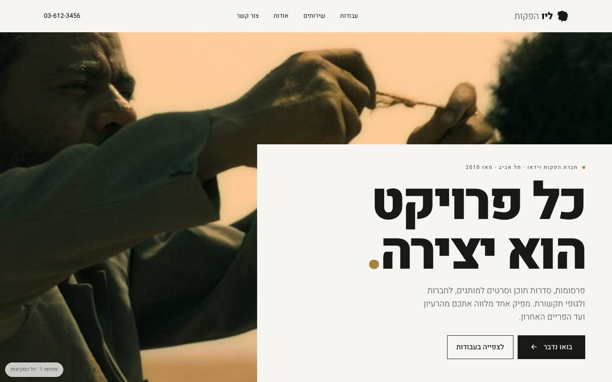
תמונה מלאה
תמונות מתחלפות ממלאות את כל מסך הפתיחה, והטקסט יושב על לוח בהיר שנחתך לתוכן.
לצפייה בפתיחה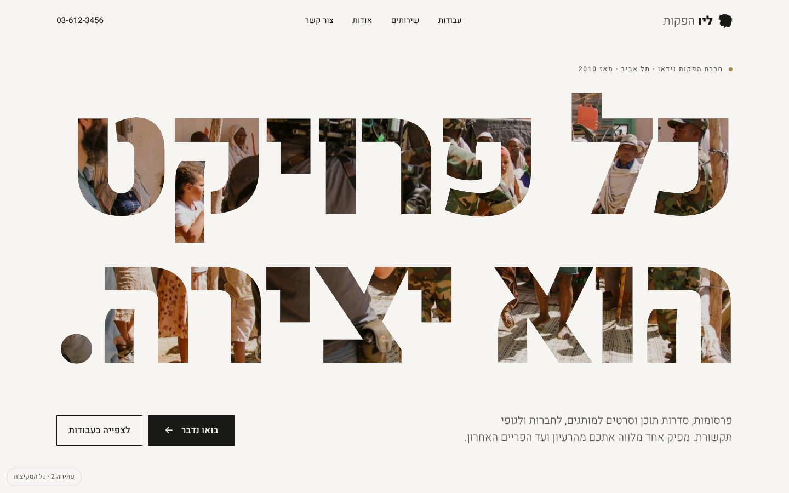
תמונות באותיות
הכותרת הענקית היא החלון: התמונות נראות רק דרך האותיות, על רקע נקי.
לצפייה בפתיחה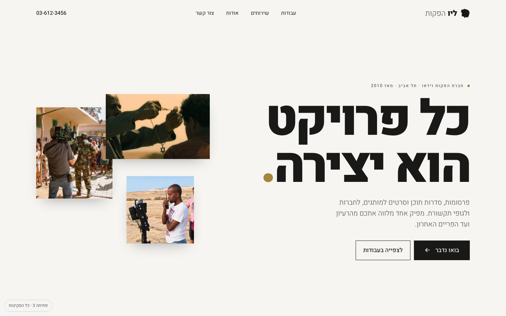
קולאז׳
שלוש תמונות מהסט ומהסרט מרחפות לאט ליד הכותרת.
לצפייה בפתיחה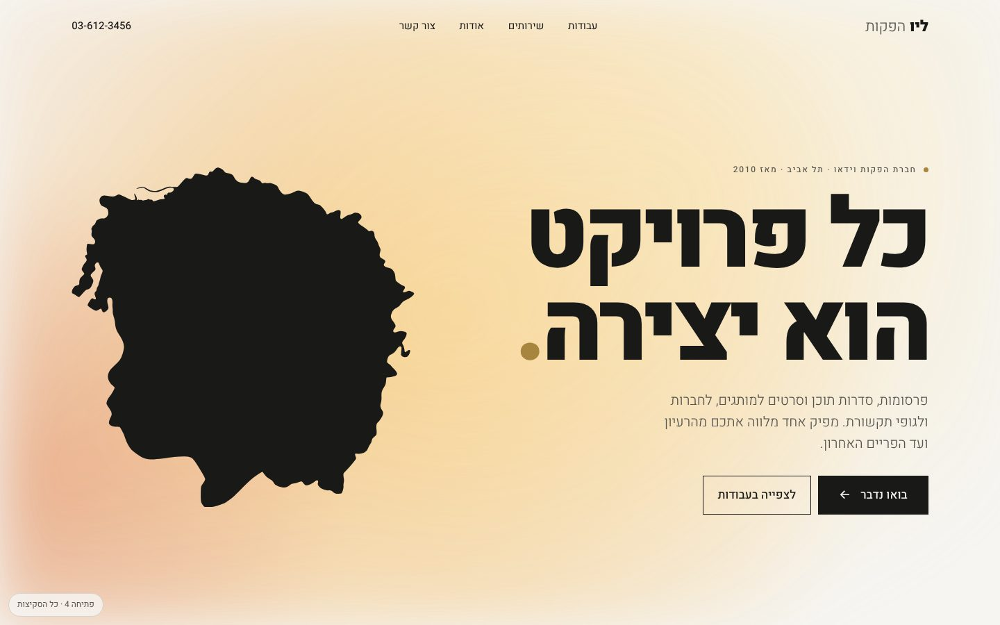
הנפשת אור
בלי תמונה בפתיחה: כתמי אור חמים נעים לאט מאחורי הצללית.
לצפייה בפתיחהשבע סקיצות בגוון חם
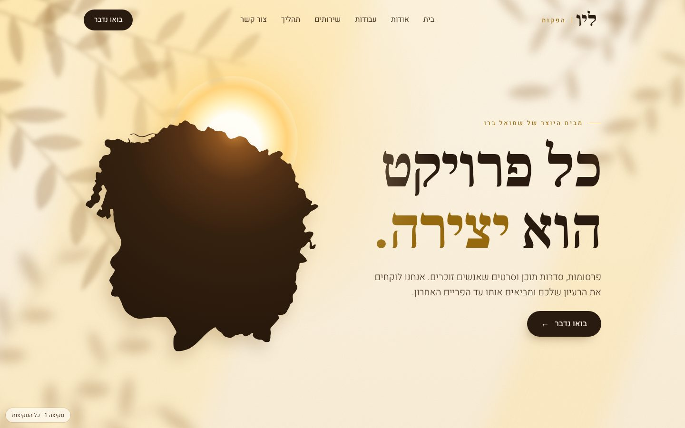
קיר שמש
הכי קרוב לתמונת המותג: קיר מואר בשמש של אחר הצהריים, צללי עלים שזזים לאט, והצללית מול שמש עולה.
לצפייה בסקיצה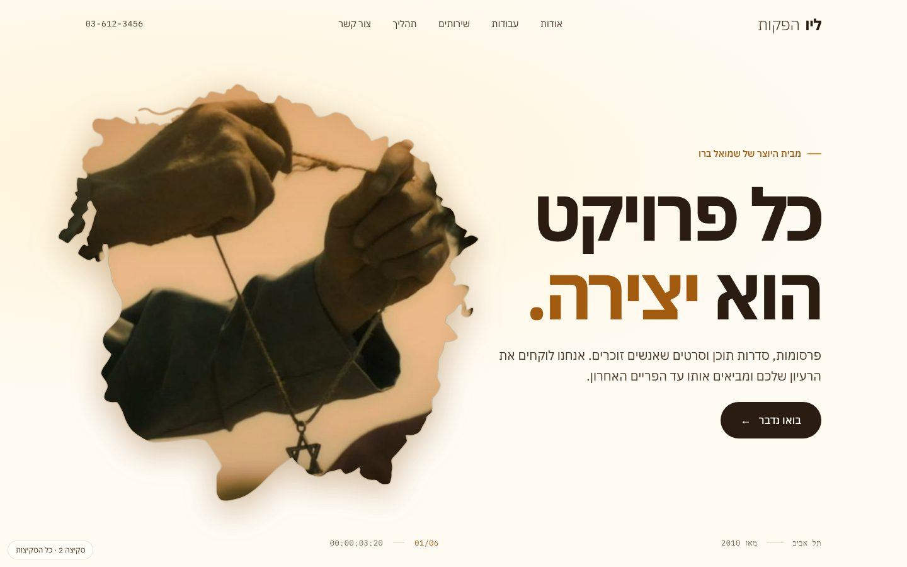
הראש מלא סרטים
הצללית היא המסך: בתוך הראש של הילד מתחלפים פריימים מההפקות. נקי, מודרני ומדויק.
לצפייה בסקיצה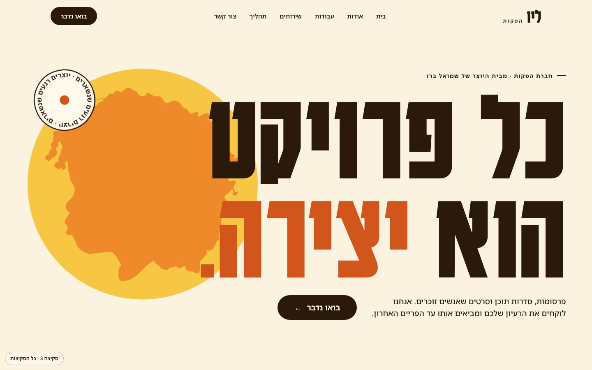
פוסטר
טיפוגרפיה ענקית כמו כרזת פסטיבל, צללית כתומה שמשתלבת באותיות, ומשטחי צבע חמים.
לצפייה בסקיצה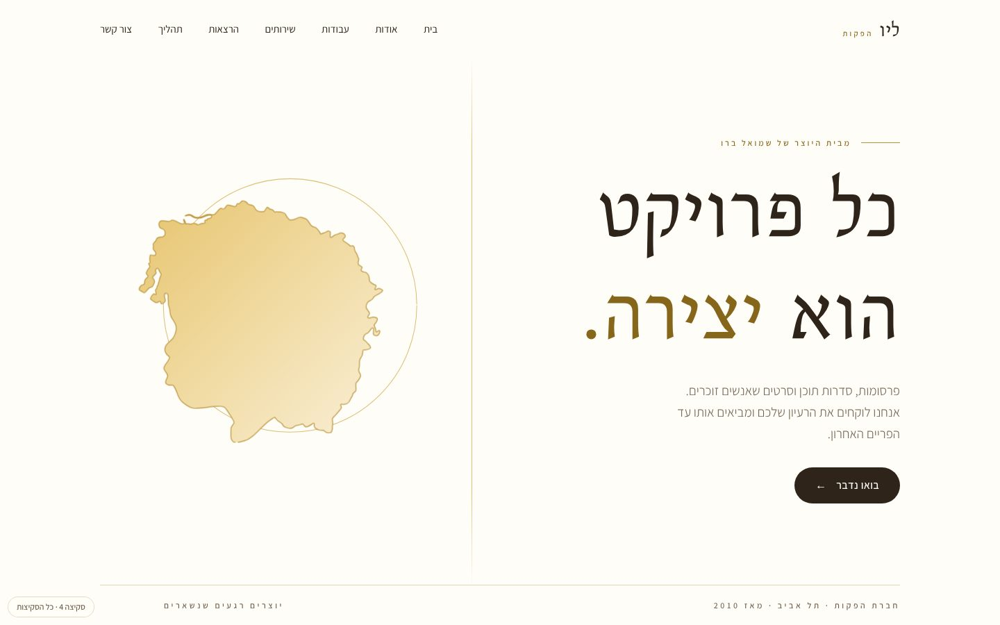
גלריה
שקט ואלגנטי, עם הרבה אוויר וקווים דקים. הצללית מצוירת בקו זהב, והעבודות מוצגות כמו בתערוכה.
לצפייה בסקיצה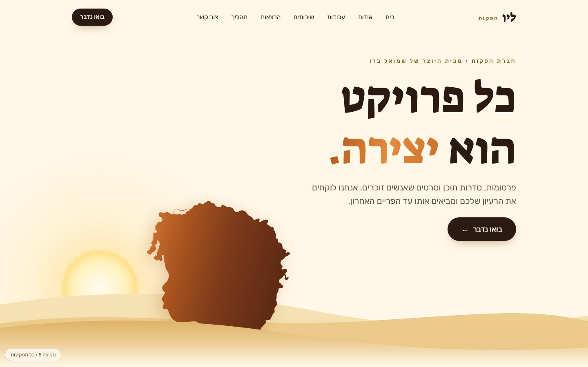
מסלול השמש
יום שלם של אור לאורך הגלילה: השמש זורחת בפתיחה ושוקעת ליד פרטי הקשר, והצבעים משתנים איתה.
לצפייה בסקיצה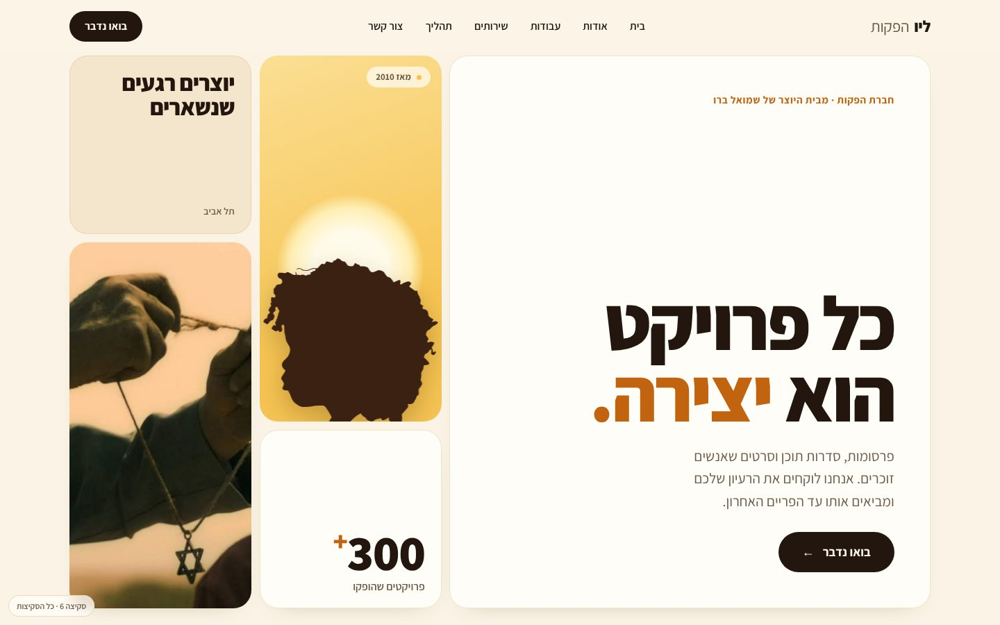
מוזאיקה
כל האתר בנוי מאריחים מעוגלים, כמו מסך של אפליקציה: כותרת, צללית, פריימים חיים ועובדות במסך אחד.
לצפייה בסקיצה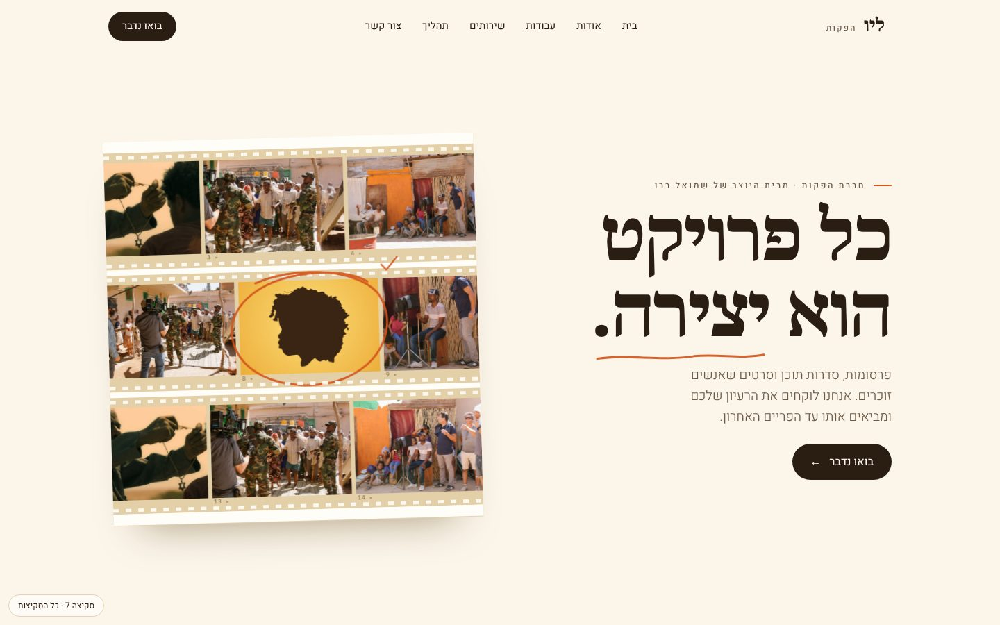
גיליון קונטקט
בשפה של המקצוע: רצועות פריימים על נייר, מספרי פריים, וסימון בעיפרון שמקיף את הפריים הנבחר.
לצפייה בסקיצהשתי סקיצות ניטרליות
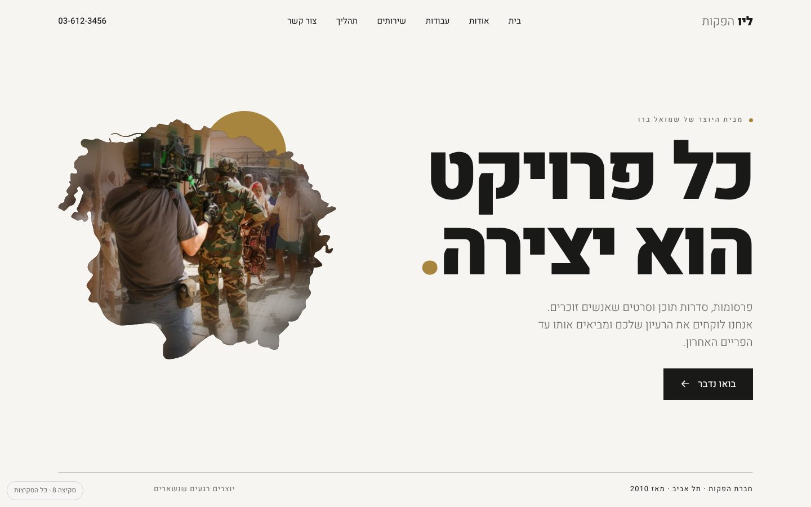
נייר
ניטרלי ומודרני: לבן שבור ופחם, בלי צהוב וחום. הצבע בעמוד מגיע מהצילומים עצמם.
לצפייה בסקיצה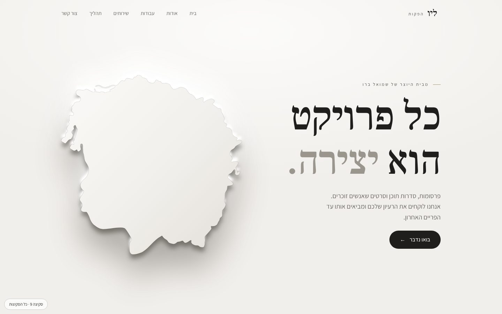
אבן
ניטרלי ורך בגווני אבן. הצללית היא תבליט בצבע הקיר, ורואים אותה רק בזכות האור שנע עליה.
לצפייה בסקיצה